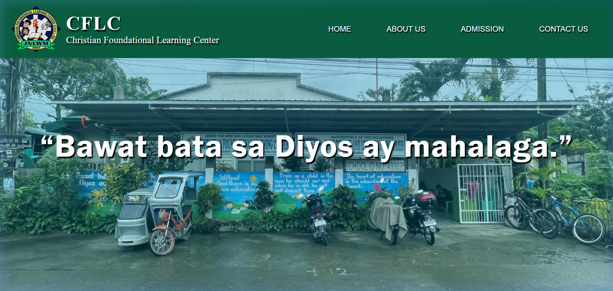

Web Development
Christian Foundational Learning Center (CFLC) Official Website
A comprehensive online platform designed for Christian Foundational Learning Center, a private, non-profit school located in Basud, Camarines Norte. The primary goal of the website is to provide a digital presence that informs parents and the community about the school's academic offerings and spiritual foundation.
Key Features
- Engaging Homepage — Showcases the school's motto, "Bawat bata sa Diyos ay mahalaga," and the current school year theme, "UNITY in VISION".
- School Profile — Dedicated "About Us" section detailing the school's history, core values (LEGACY), and its mission and vision.
- Admission Portal — Clear enrollment guide for Pre-School pupils, Grade 1 pupils, and transferees.
- Interactive Resources — Quick-access buttons for curriculum, handbook, calendar, and uniform guides.
- Information Gallery — High-quality images showcasing the campus, classrooms, and student activities.
- Contact & Location — Direct messaging form, school contact details, and an integrated Google Maps embed.
Technologies Used
Live from GitHub
—
—
—
—